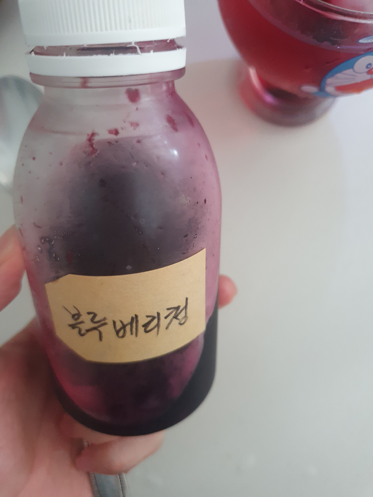
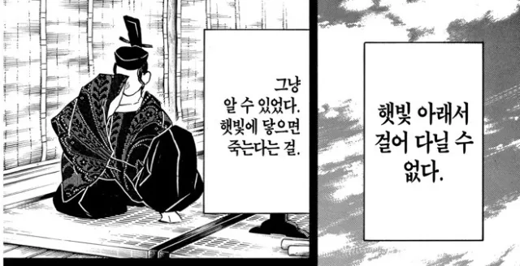

오점은 실패한 밀푀유 나베입니다. 맛은 있어요 맛은 있는데...
이 모양 만드는건 실패입니다.
그리고 구모양 얼음틀에 꽃 넣고 얼린 얼음입니다. 구모양 얼음 은근히 재밌습니다. 직육면체 얼음이랑 똑같은 성분이지만 뭔가... 뭔가 더 맛있는 기분이 듭니다.

그 후 블루베리청이랑 구모양 얼음이랑 도라에몽 컵을 조합해서 연금했습니다. 도라에몽 컵 너무 귀엽지 않습니까? 이번에 알라딘에서 책 사고 사은품으로 샀습니다.
다들 맛점하십시오
도라에몽추
밥이랑 어올릴꺼같습니다
Video 태그를 지원하지 않는 브라우저입니다. 밥이랑 엄청 잘 어울립니다. 도라에몽.... 귀... 귀엽다고 생각합니다.
캬 낭만있게 사시네요
 바깥을 나가지 못하는 히키코모리는 실내에서 어떻게든 재미를 찾고 있습니다. 놀아주는 사람이 없기 때문에....
배추 된장찌개인줄 알았습니다 어차피 뱃속에 들어가면 똑같음 추 무슨 책 사면 도라에몽 컵 줍니까?
맛도 뭔가 된장찌개 맛이었습니다.wwwwwww 전 이 책 샀는데 다른 책 사도 사은품으로 컵 받을 수 있는 것 같습니다?
구 모양의 얼음은 같은 압력 같은 질량의 얼음일 때 바깥과의 단위면적 당 접촉비율이 가장 낮아서 더 맛있다는 가설은 어떨까요?
같은 부피라고 가정하면 구의 표면적이 직육면체보다 무조건 작습니다. 언뜻보면 방교수님의 가설은 그럴듯해보이는데 액체와의 접촉을 말씀하시는겁니까 기체와의 접촉을 말씀하시는겁니까?


후원댓글 8개
댓글 8개 ▼